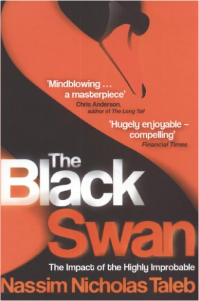
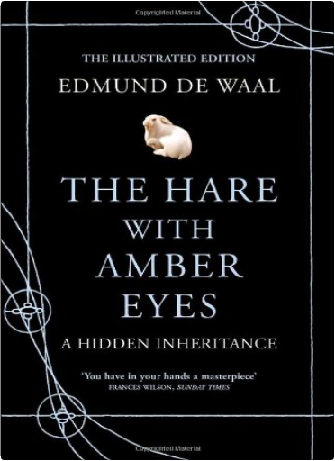

The Black Swan: The Impact of the Highly ImprobableNassim Nicholas Taleb  What have the invention of the wheel, Pompeii, the Wall Street Crash, Harry Potter and the internet got in common? Why are all forecasters con-artists? What can Catherine the Great's lovers tell us about probability? And, why should you never run for a train or read a newspaper? This book is all about Black Swans: the random events that underlie our lives, from bestsellers to world disasters. Their impact is huge; they're impossible to predict; yet after they happen we always try to rationalize them. A rallying cry to ignore the 'experts', "The Black Swan" shows us how to stop trying to predict everything - and take advantage of uncertainty. The Hare with Amber Eyes: A Hidden Inheritance. Edmund de WaalEdmund de Waal This is the definitive illustrated edition of the international bestseller with gorgeous new photography of the celebrated netsuke collection, and sumptuous full-colour images hand-picked by Edmund de Waal from his family archive 264 Japanese wood and ivory carvings, none of them bigger than a matchbox: Edmund de Waal was entranced when he first encountered the collection in his great-uncle Iggie's Tokyo apartment. When he later inherited the 'netsuke', they unlocked a story far larger and more dramatic than he could ever have imagined. From a burgeoning empire in Odessa to fin de siecle Paris, from occupied Vienna to post-war Tokyo, Edmund de Waal traces the netsuke's journey through generations of his remarkable family against the backdrop of a tumultuous century.  The Lucifer Effect: Understanding How Good People Turn EvilPhilip Zimbardo The Lucifer Effect: Understanding How Good People Turn EvilPhilip Zimbardo What makes good people do bad things? How can moral people be seduced to act immorally? Where is the line separating good from evil, and who is in danger of crossing it? |


 Made with Delicious Library
Made with Delicious LibrarySpringfield, State zipflap congrotus delicious library Doddridge, Edward